Front Differential
NOTE: The ring and pinion gears are serviced as a matched set. Do not replace the pinion gear without replacing the ring gear.REMOVAL
1. Remove differential assembly from axle housing.
2. Mark pinion yoke, or flange, and propeller shaft for installation alignment.
3. Disconnect propeller shaft from pinion yoke, or flange. Using suitable wire, tie propeller shaft to underbody.
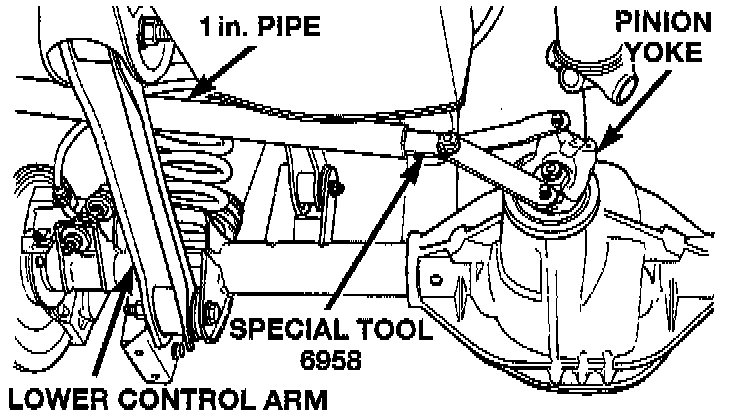
4. Using Holder 6958, or equivalent to hold yoke, or flange, and a short length of 1 inch pipe, remove the pinion nut and washer.
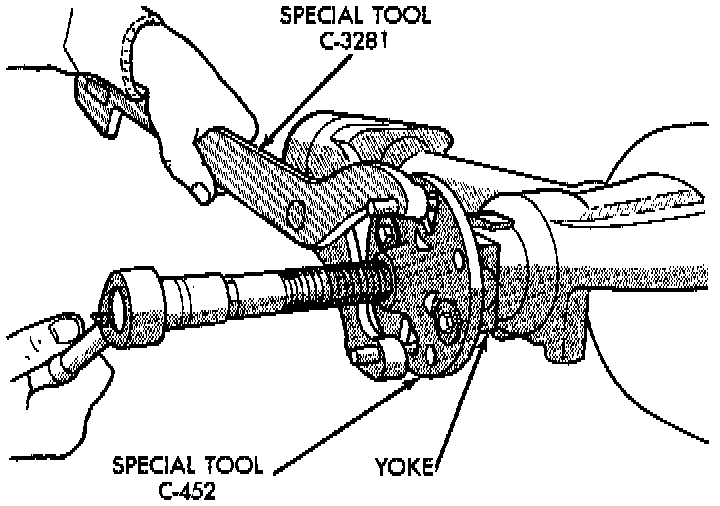
5. Using Remover C-452 and Holder C-3281, or equivalents, remove the pinion yoke, or flange, from pinion shaft.
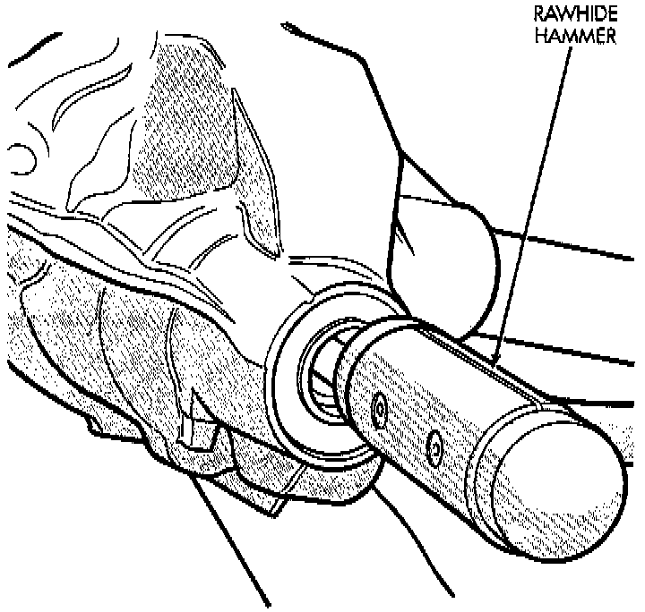
6. Remove the pinion gear and collapsible spacer from housing. Catch the pinion with your hand to prevent it from falling and being damaged.
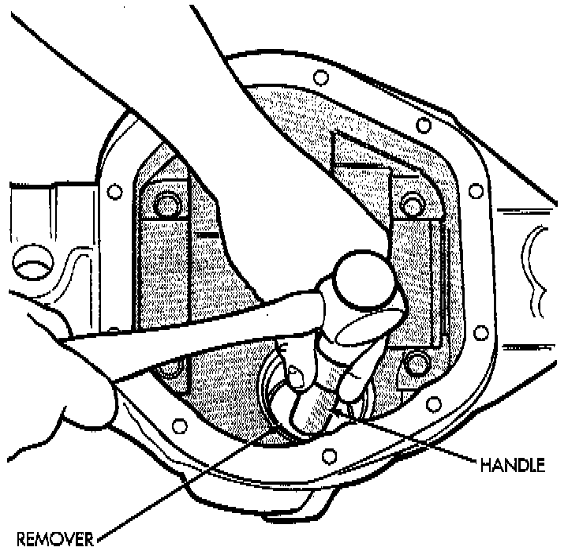
7. Remove the front pinion bearing cup, bearing, oil slinger, if equipped, and pinion seal with Remover C-4345 and Handle C-4171, or equivalents.
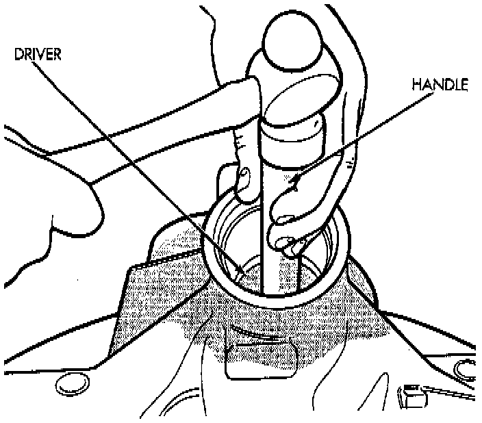
8. Remove the rear pinion bearing cup from axle housing. Use Remover D-149 and Handle C-4171, or equivalents.
9. Remove the depth shims from rear pinion bearing cup bore in axle housing. Record the thickness of the depth shims.
NOTE: The pinion depth shims can be very thin. Verify that all shims have been removed before proceeding.
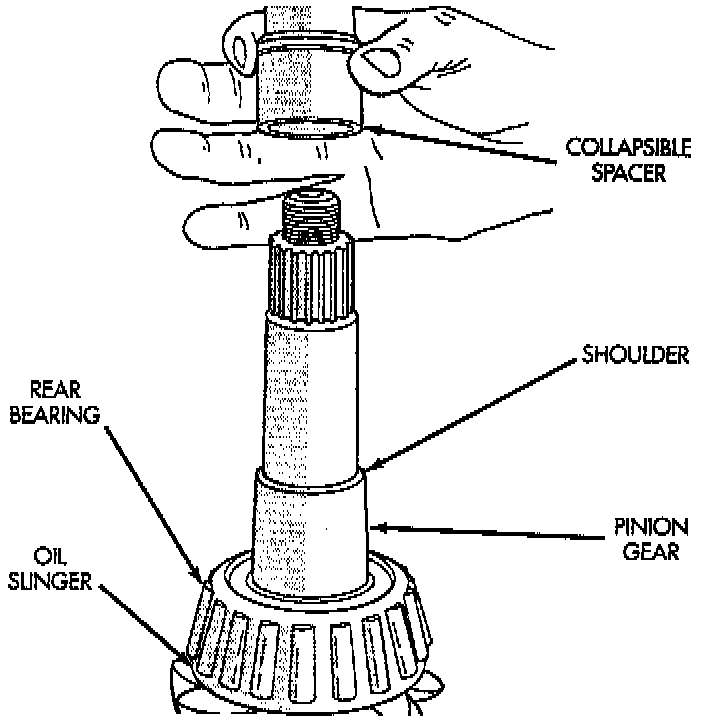
10. Remove the collapsible preload spacer from pinion gear.
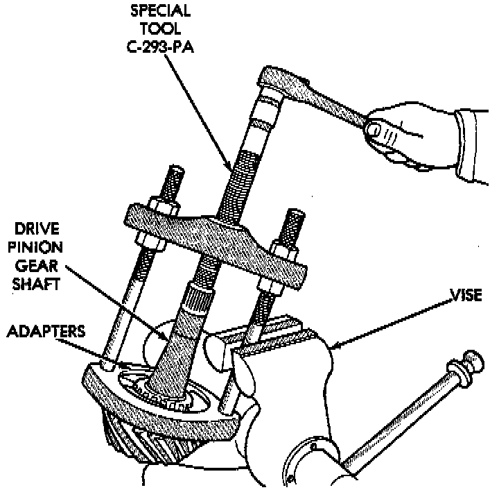
11. Remove the rear pinion bearing from the pinion with Puller/Press C-293-PA and Adapters C-293-39, or equivalents. Place 4 adapter blocks so they do not damage the bearing cage.
NOTE: Pinion depth shims are placed between the rear pinion bearing cup and axle housing to achieve proper ring and pinion gear mesh. If the factory installed ring and pinion gears are reused, the pinion depth shim should not require replacement. Refer to Pinion Gear Depth to select the proper thickness shim before installing pinion gear.
INSTALLATION
1. Place proper thickness depth shim in rear pinion bearing cup bore in the axle housing.
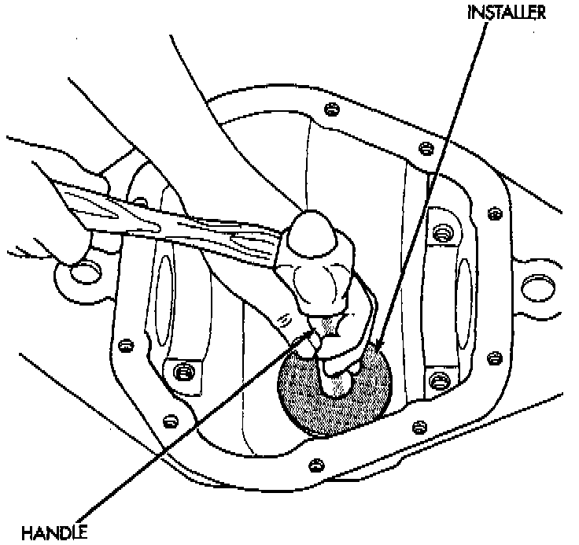
2. Apply MOPAR Door Ease, or equivalent, stick lubricant to outside surface of rear pinion bearing cup. Install the bearing cup with Installer D-146 and Driver Handle C-4171, or equivalents. Verify cup is correctly seated.
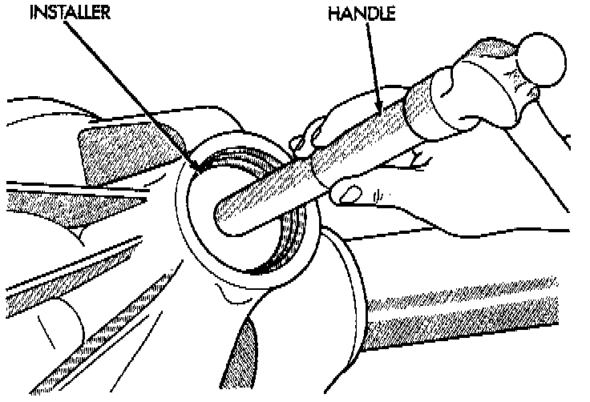
3. Apply MOPAR Door Ease, or equivalent, stick lubricant to outside surface of front pinion bearing cup. Install the bearing cup with Installer D-130 and Handle C-4171, or equivalents.
4. Install front pinion bearing, and oil slinger, if equipped.
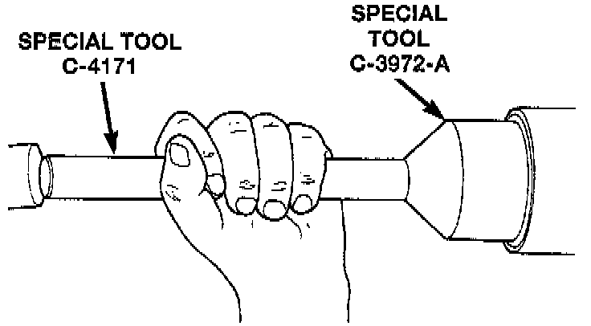
5. Apply a light coating of gear lubricant on the lip of pinion seal. Install seal with Installer C-3972-A and Handle C-4171, or equivalents.
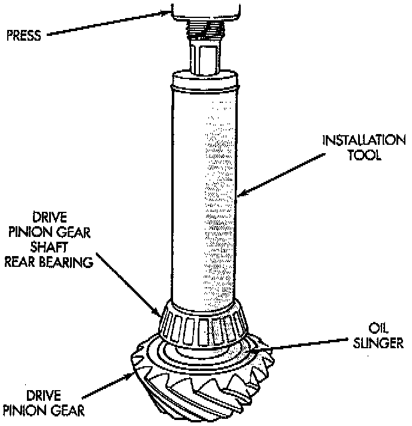
6. Install the rear pinion bearing and oil slinger, if equipped, on the pinion gear with Installer W-262, or equivalent and a shoe Dress.
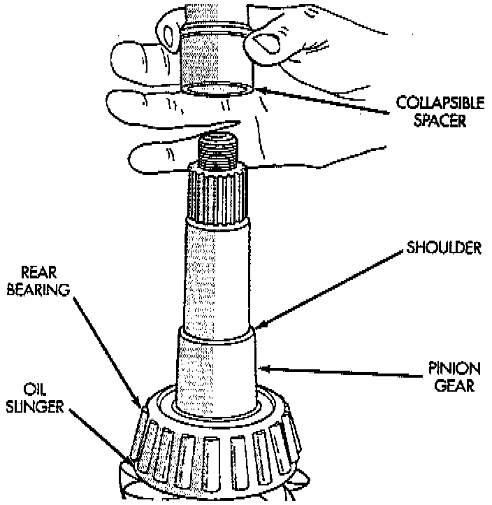
7. Install a new collapsible preload spacer on pinion shaft and install pinion gear in housing.
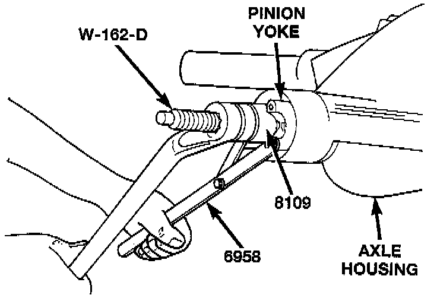
8. Install yoke, or flange, with Installer W-162-B, Cup 8109, and Holder 6958, or equivalents.
9. Install the pinion washer and a new nut on the pinion gear. Tighten the nut to 216 Nm (160 ft. lbs.) minimum. Do not over-tighten. Maximum torque is 352 Nm (260 ft. lbs.).
CAUTION: Never loosen pinion gear nut to decrease pinion gear bearing rotating torque and never exceed specified preload torque. If preload torque is exceeded a new collapsible spacer must be installed. The torque sequence will then have to be repeated.
NOTE: If the spacer requires more than 352 Nm (260 ft. lbs.) of torque to crush, the collapsible spacer is defective.
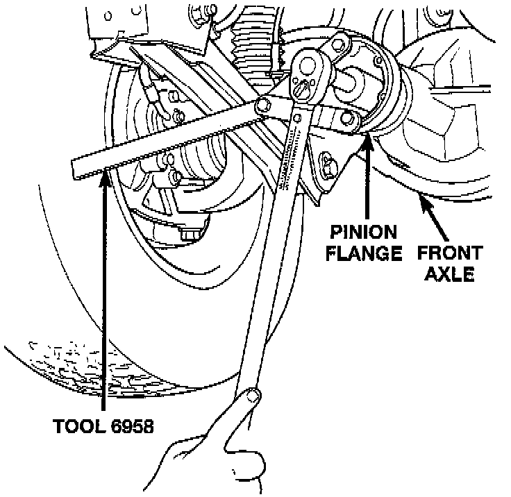
10. Using Holder 6958, a short length of 1 inch pipe, and torque wrench (set at 352 Nm (260 ft. lbs.)), crush collapsible spacer until bearing end play is taken up.
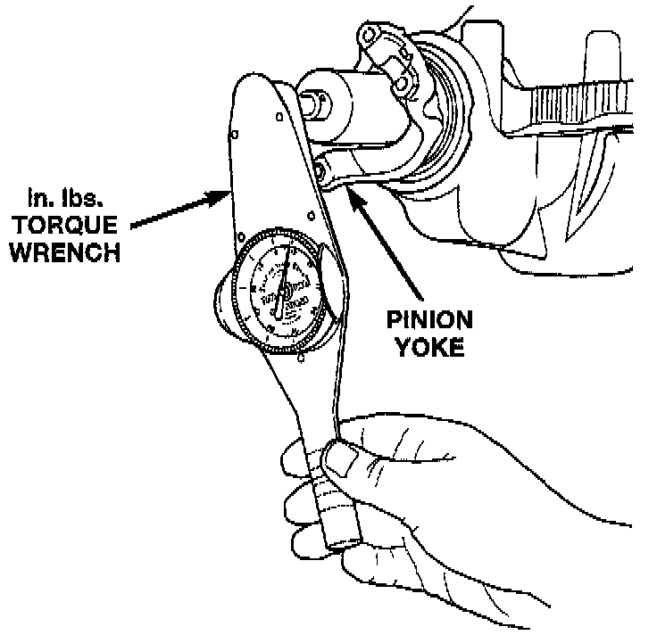
11. Slowly tighten the nut in 6.8 Nm (60 inch lbs.) increments until the rotating torque is achieved. Measure the rotating torque frequently to avoid over crushing the collapsible spacer.
12. Check bearing rotating torque with an inch pound torque wrench. The torque necessary to rotate the pinion gear should be:
- Original Bearings 1 to 3 Nm (10 to 20 inch lbs.).
- New Bearings 2 to 5 Nm (15 to 35 inch lbs.).
13. Install differential assembly.